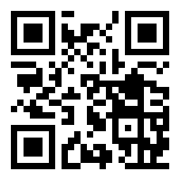

QR Code
Child of Barcode

This is a QR Code
About QR Code:
- Designed in 1994, by a two-person team at Denso Wave. QR Code was first used to track vehicles during the manufacturing process, in Japan.
- QR Code can encode up to 7089 characters as compared to the maximum of 20 digits on Barcode. It is capable of handling all types of data, such as numeric and alphabetic characters, Kanji, Kana, Hiragana, symbols, binary, and control codes.
- Since the QR Code is 2D, as compared to 1D Barcode, it can encode the same amount of data in approximately one-tenth of the space.
- QR Code can encode Kanji character efficiently in 13 bits, allowing it to hold 20% more data than any other 2D symbology.
- QR Code has error correction capability. Data can be restored even if the symbol is partially dirty or damaged.
- QR Code is capable of omnidirectional (360 degrees), high-speed reading. It accomplishes this through position detection patterns (big squares) located at the three corners of the symbol.
- QR Code can be divided into up to 16 symbols, allowing printing in a narrow area. Information stored in multiple QR Code symbols can be reconstructed as a single data symbol.